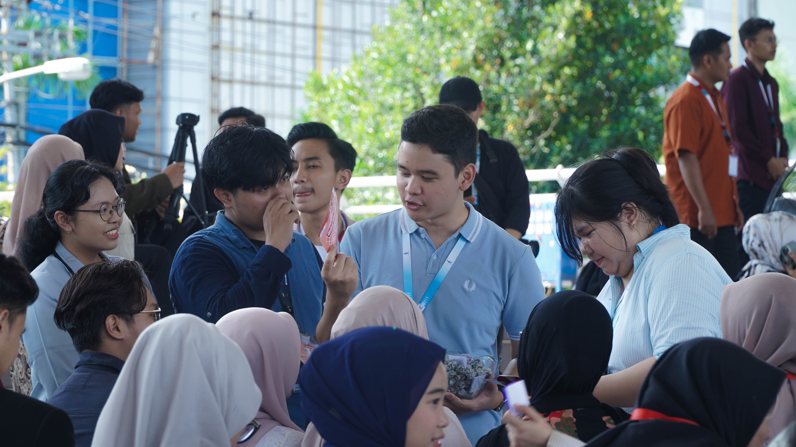
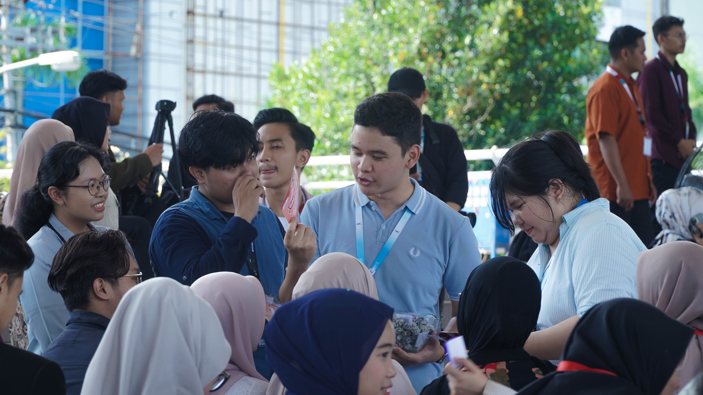

2024 - Present
As a Global Product Marketing Staff at AIESEC, I develop and execute marketing strategies to promote the organization’s international exchange programs. I create engaging content across digital platforms to attract potential participants while ensuring that all initiatives align with AIESEC’s goals through collaboration with cross-functional teams. By analyzing campaign performance and leveraging data-driven insights, I continuously optimize marketing strategies for greater impact. Additionally, I contribute to event planning and community engagement activities to strengthen outreach and build meaningful connections.
Key Achievements:
- Develop and execute marketing strategies to promote AIESEC's global exchange programs.
- Create engaging content across digital platforms to attract potential participants.
- Collaborate with cross-functional teams to align marketing initiatives with organizational goals.
- Analyze campaign performance and optimize strategies based on data insights.